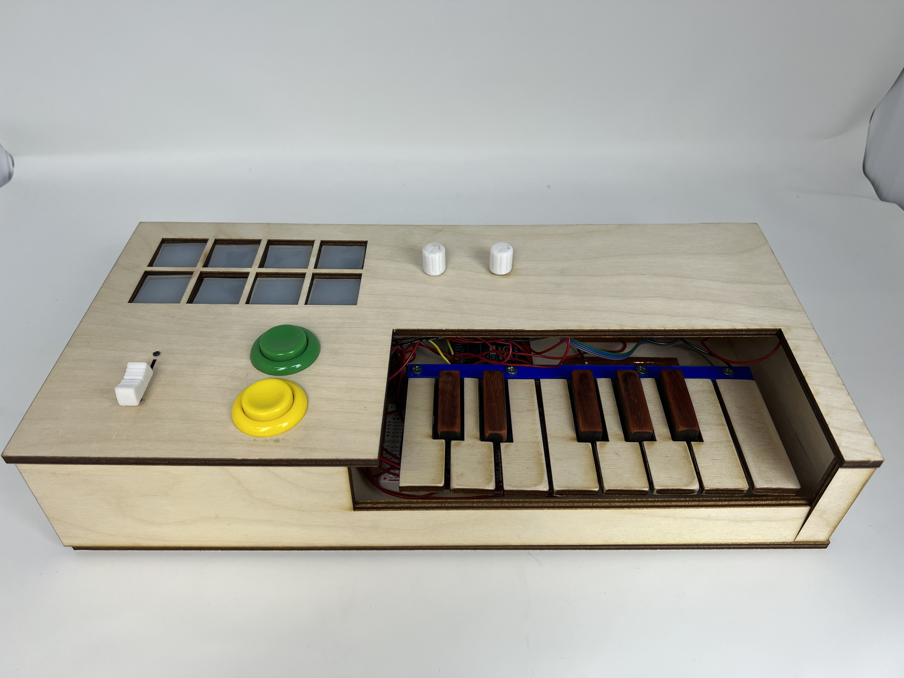
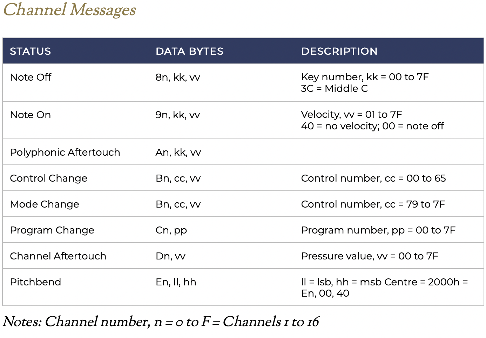
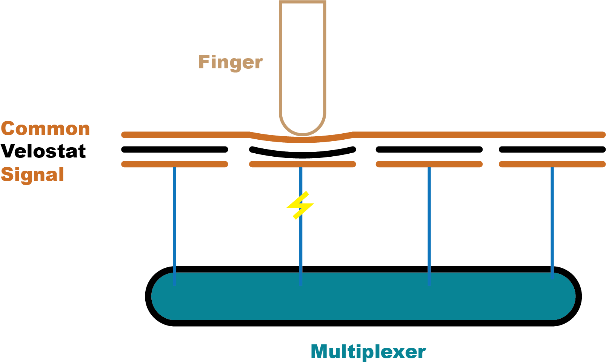

Designing a MIDI Controller from Arduino Uno
Product
This Arduino Uno MIDI Controller comes with a variety of features for real music production:
- Keys: Play any note you like!
- Octave Buttons: At any range you like!
- Faders and Knobs: With the effects you like!
- Velocity-Sensitive Pads: At the velocity you like!
Objective
As music becomes increasingly integrated with electronics, one modern device has dominated the translation of musical expression to electronic signal: the MIDI controller. These devices generally look like keyboards, and are often outfitted with a variety of pads, faders, rotary encoders, and more. I created a MIDI controller with various input sensors from an Arduino Uno. Join me as I explain the process! Code is freely available here: Download MIDI.ino
Fabrication Details
Outline:
Output: MIDI Signal
MIDI (Musical Instrument Digital Interface) is a communications protocol between instruments and computers. Signals are sent as packages of three bytes, whose content depends on the specific message. Hinton Instruments provides a great foundational understanding in their MIDI Protocol Guide.
Consider a Note On signal sending a middle C (C4) at maximum volume, consisting of the following bytes:
- 0x90: Send a note on channel 0
- 0x3C: Send a note pitch of 60 (C4)
- 0x7E: Send a velocity value of 127 (maximum)
Arduino code for a MIDI signal appears as follows:
void send(byte cmd, byte db1, byte db2) {
Serial.write(cmd);
Serial.write(db1);
Serial.write(db2);
}
However, the Arduino Uno is normally unable to send MIDI signal, as it is recognized as a Serial instead of a USB device. I describe the process to send MIDI signal from an Uno below:
- Download the dualMocoLUFA firmware from the
HEX/dualMoco.hexpathway. This allows the Uno to function as either a Serial or USB device depending on a jumper between ICSP pins. - Push the firmware following this guide. After pushing, disconnect and reconnect the Uno, and open up the Arduino IDE. The device should not be connected.
- To put the Arduino in Serial mode, connect ICSP pins 4 and 6, located near the reset button. See this page for clarity.
- Upload a sketch, such as
File > Examples > 04.Communication > MIDI. - Disconnect the board, remove the jumper cable between ICSP pins 4 and 6, then reconnect the board. It should be sending MIDI signal!
- To confirm signal is sent, check that MIDI signal is detected with a software like MidiView.
Input: Buttons, Sliders, and Knobs
Buttons: I use two buttons to control the octave of the machine. One button shifts all notes up by one octave (12 half steps), while the other button shifts notes an octave down. The buttons are each wired to ground and a digital input pin initialized as INPUT_PULLUP. Pin states are read using the custom pullupRead() function, which reads 1 if a button hooked up to a pullup resistor circuit is pressed, and 0 otherwise.
void handleOctaves() {
for (int i = 0; i < 2; i++) {
octaveCState[i] = pullupRead(OCTAVE_BUTTON_PIN[i]);
if (octaveCState[i] != octavePState[i] && octaveCState[i] == 1) {
if (i == 0) {
octave -= 12;
}
else if (i == 1){
octave += 12;
}
}
octavePState[i] = octaveCState[i];
}
}
Sliders and Knobs: These function as potentiometers, and control various MIDI signals. Each potentiometer is wired to power, ground, and an analog input pin. Their inherent values of [0, 1023] are mapped to [0, 127] to fit with MIDI signal constraints.
void handlePots() {
for (int i = 0; i < N_POTS; i++) {
potCState[i] = map(analogRead(POT_PIN[i]), 0, 1023, 0, 127);
if (potCState[i] != potPState[i]) {
send(0xB0+1, POT_VALS[i], potCState[i]);
}
potPState[i] = potCState[i];
}
}
Input: Keys
Commerically available MIDI controllers generally employ one of three types of keys: digital, velocity-sensing through time, or velocity-sensing through weight. Digital keys are the most simple, and send a constant velocity signal if the key is pressed; this requires a single button. Velocity-sensing keys use two buttons at different positions. The key is attached like a lever, so one button is depressed beofre the other. By recording the difference in time, one can calculate a velocity of press and translate that to volume or intensity. Weighted keys use a more complex mechanism, but effectively use the same calculation. I decided to use simple on/off keys for my build based on a single button. The design was based off of the Arduino Soundlab by John Bradnam. However, I decided to reconstruct the model to redesign tabs, add attachment points for the keys, and to allow for lasercutting of wood keys. My full model is shown below, as well as just the tabs that were 3D printed.
The set of 13 keys were wired into a 16-input multiplexer, which only requires 5 pins on the limited capacity of the Arduino Uno. Arduino code to deal with keys appears as follows:
void handleKeys() {
for (int i = 0; i < N_KEYS; i++) {
buttonCState[i] = pullupReadMux(i, muxPins1, sensorPin1);
if (buttonCState[i] != buttonPState[i]) {
if (buttonCState[i] == 1) {
send(0x90, MESSAGE_VAL[i]+octave, 64);
}
else if (buttonCState[i] == 0) {
send(0x90, MESSAGE_VAL[i]+octave, 0);
}
}
buttonPState[i] = buttonCState[i];
}
}

Input: Pads
While my keys sent binary output of on/off, I wanted to design pads which were velocity sensitive. This allows for more expression, and is especially often used in the context of drums. I aimed to construct 8 drum pads total, structured as 2 rows of 4 pads each. This video and its associated code was incredibly helpful in approaching this problem. My first big question was how to detect different amounts of pressure, especially in terms of deciding between capacitive vs. resistive sensing. Due to the consistency and easier control of resistive sensors, I decided to use the force-sensitive resistor Velostat. This material changes resistivity with force, making it the perfect candidate for these sensors.
The general design of a single row is shown below. The bottom layer is a copper strip specific to the pad, connected to a multiplexer analog input. Velostat is in the middle. On top, is a common copper strip which connects to power. Above this velostat sandwich is a layer of plastic supporting gel-like pads. The output of the multiplexer is sent through a voltage divider circuit, for which I used a 300Ω resistor to tune my inputs to the sensitivity of the velostat.



Pads in Progress
Calibrating the pad values was difficult at first, and I experienced difficulty with nearby interference. However, by carefully setting lower and upper bounds, the pads become both sensitive and non-noisy. The signal is really great on these things! Below is the code I used to process the signal data.
void handlePads() {
for (int i = 0; i < N_PADS; i++) {
padCState[i] = analogReadMux(i, muxPinsPad, PAD_PIN);
diff = padCState[i] - padPState[i];
if ((diff > 5 || diff < -5) && padCState[i] > PADS_MIN[i]) {
vel = map(padCState[i], PADS_MIN[i], PADS_MAX[i], 0, 127);
if (vel > 127) {
vel = 127;
}
send(0x90, PAD_VAL[i], vel);
}
else if (diff < -10 ) {
send(0x90, PAD_VAL[i], 0);
}
padPState[i] = padCState[i];
}
}
Housing
Wooden housing was laser cut for the structure of the rectangular MIDI controller. The box is 15 x 6.7 x 3 inches, a pretty compact size.

MIDI Top
Conclusion
I'm incredibly happy with how the MIDI controller turned out! It sends signal great and is very responsive. One major issue is the speed of the Uno MCU, which is not fast enough to capture every input. In the future, I would add more buttons (maybe with a Mega).